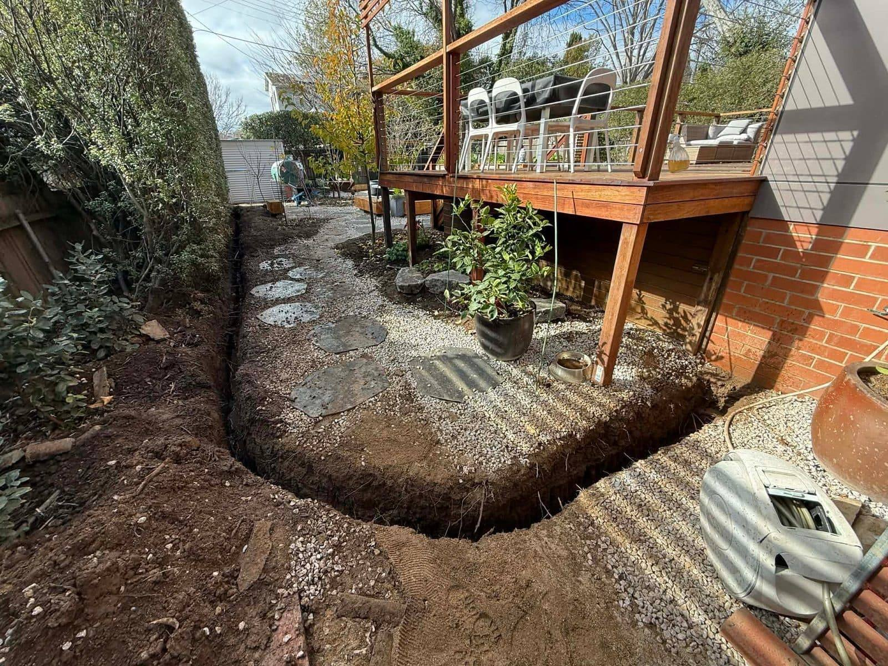
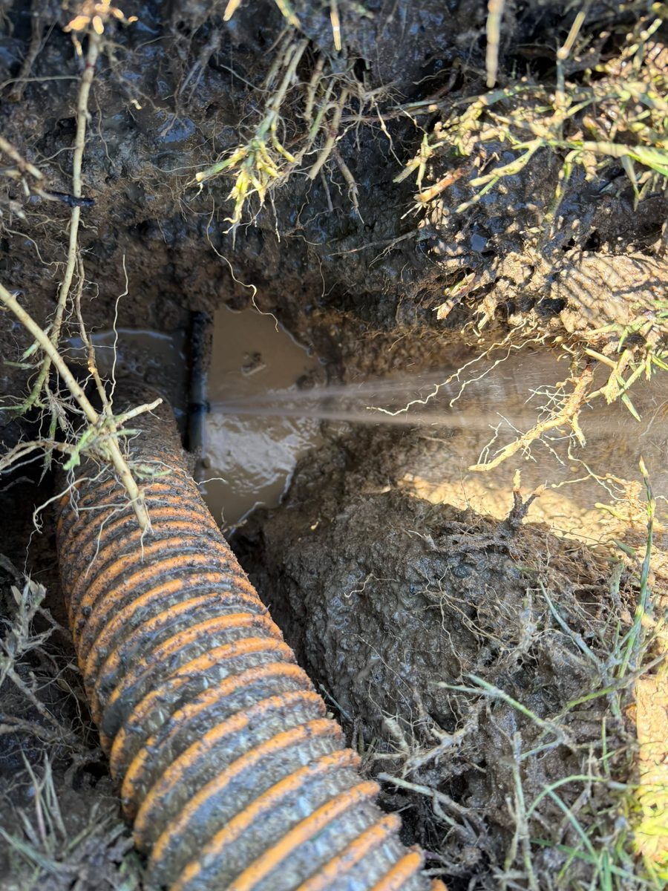

Hydro Excavation Services
We run one compact, trailer-mounted rig across Canberra ACT and Southern NSW. Every job on this list is something we've done before — and we'll tell you straight if yours needs a different approach.
Non-Destructive
Digging (NDD)
Non-destructive digging exposes gas, water, electrical and comms using pressurised water and vacuum — the careful way to dig near live services across Canberra ACT and Southern NSW.
NDD uses pressurised water to break up soil, which is vacuumed straight into a debris tank. The water breaks up soil but not the man-made infrastructure beneath it — that physical property is what makes it the preferred method for working near live services, and on many job sites it's a requirement before mechanical excavation can start.
Gas, water, electrical, and NBN/comms services can all be exposed and visually inspected. Once uncovered, you can confirm depth, condition, and exact position before your mechanical crew moves in.
Works For
Plumbers, electricians, civil contractors, builders, council crews — anyone digging within cooee of existing services.
The Access Advantage
The trailer rig gets onto sites rigid trucks can't reach. No street closure, no traffic management plan — we set up and start the same day.

Hydro-Excavation
Trenching
Hydrovac trenching cuts a clean, accurate trench to the depth you need without tearing up everything around it — built for tight residential and serviced sites.
Need to run a new water, gas, electrical, or data line without ripping up the whole yard? Hydro-Excavation trenching gives you a clean, precise trench to the depth you need — without touching anything that's already down there.
Compared to mechanical trenching, hydrovac produces far less surface disruption and eliminates the risk of cutting through services you didn't know were there. Ideal for residential gardens, driveways, paved areas, and anywhere heritage or precision matters.
Common Jobs
Plumbers, electricians, builders, irrigation contractors, pool builders, NBN and telco installers running new lines.
Fits Where Machinery Won't
The trailer rig fits through a residential gate. Backyard trenching, laneway runs, narrow side passages — if a machine can't get in, we probably still can.

Utility Locating
& Potholing
Utility potholing exposes a service so you can confirm its exact depth and position before you dig — small, precise holes, anywhere the compact rig fits.
Got a DBYD plan but need to confirm where services actually are? Potholing creates a small, precise excavation to verify the exact depth and position of underground utilities. We expose it carefully, you confirm the details before your mechanical crew moves in.
This service is critical before new builds, renovations, civil works, and road jobs. Used daily by plumbers, sparkies, civil crews, and project managers to protect both their crews and the owner's existing infrastructure.
Typical Clients
Plumbers, electricians, civil engineers, project managers, NBN and telco installers — any trade that needs certainty before they dig.
What You Walk Away With
Confirmed depth and position on record. Your crew knows exactly where to dig — and where to leave alone.

Leak Detection
Support
Leak exposure opens up cleanly around a suspected leak so your plumber can inspect and repair it, with minimal disruption to paving, gardens and surrounds.
Found a leak but you can't get to it without pulling up the driveway or the garden? We dig in precisely around the suspected area and expose the pipe cleanly — without making the damage worse on the way in.
We work alongside plumbers and water authorities to expose the affected section so your crew can diagnose, access, and repair — faster, with less collateral damage. The surrounding area stays intact. The repair cost stays manageable.
Who Calls Us
Plumbers, water authorities, property managers, strata managers, councils — anyone dealing with a leak that's underground and hard to reach.
Less Collateral Damage
Concrete, garden beds, paving — careful excavation around the leak point keeps the repair scope tight and limits disruption to the surrounding site.

Cattle Grid &
Pit Cleaning
Pit and cattle-grid cleaning vacuums out silt, sludge and debris from service pits, grids, culverts and chambers across the ACT and Southern NSW.
Sludge, debris, and sediment build up in service pits, cattle grids, culverts, and stormwater systems — blocking drainage, causing maintenance issues, and creating compliance headaches. This is the dirty, hard-to-reach work that most operators don't want to quote on.
GreenVac's vacuum system handles it. We pump out the debris, clean the structure, and leave it functioning. Works for service pits on rural properties, council stormwater assets, culverts, and access chambers that are too confined for excavators.
Who Calls Us
Rural property owners, farmers, councils, road crews, utilities — anyone whose drainage infrastructure hasn't been touched in years.
Remote Access, No Problem
The trailer rig travels. We get to remote properties and restricted locations that large vacuum trucks won't bother quoting on.

Tight Access
Excavation
Tight-access excavation gets a compact trailer rig into spots full-size machines can't — narrow side passages, backyards, heritage sites — usually with no street closure.
Got a site where larger equipment simply won't go? This is GreenVac's signature capability. Our compact trailer-mounted rig fits through standard residential gates, navigates narrow laneways, and works in the space between buildings — without street closures or traffic management.
Whether it's a backyard, a narrow side passage, a basement access, or a built-up area with no room to swing an excavator — if there's a pedestrian gate and a flat surface, we can usually get in and get the job done. Call us to discuss your specific site.
If Others Said No
Residential, commercial, or civil — if the problem is access and you've already had operators decline, give us a call. That's exactly the kind of job we take on.
Built for This
Tight access isn't a workaround for us — it's what the rig is designed for. We win jobs that larger operators have to pass on, and we've been doing it since day one.

Fully insured. DBYD compliant. Every job.
Every GreenVac job is backed by full public liability insurance, and we work to Dial Before You Dig (DBYD) standards on every site. Exposing gas, water, electrical and comms is careful, methodical work — we treat existing infrastructure with the respect it deserves.
Want a Rough Number?
Use our Job Cost Estimator to get a ballpark price in under 2 minutes. No sign-up. No waiting. Every enquiry gets a personal follow-up.